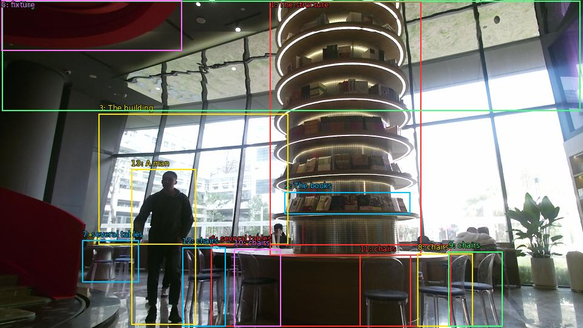

The image shows a modern restaurant with a large circular structure in the center. The structure is made up of multiple layers of books arranged in a spiral-like pattern. The books are of different sizes and colors, and they are stacked on top of each other in a way that creates a sense of depth and dimension. The building in the background has large windows that let in natural light and offer a view of the city. The restaurant has a high ceiling with a red circular light fixture, and there are several tables and chairs scattered throughout the space. A man is standing in front of the structure, looking at it.

Original · Caption raw · Grounding raw · Koordinate
Številke so lokalni ID regije. Dolge slikovne oznake so skrajšane; spodaj so celotne fraze. Napovedane regije se lahko prekrivajo ali opisujejo skupine.
| ID | Celotna fraza | bbox xyxy |
|---|---|---|
| 1 | The structure | [444.9599914550781, 2.430000066757202, 693.5999755859375, 420.9300231933594] |
| 2 | The books | [468.9599914550781, 316.1700134277344, 675.3599853515625, 352.8900146484375] |
| 3 | The building | [162.72000122070312, 187.65000915527344, 474.7200012207031, 402.030029296875] |
| 4 | ceiling | [3.359999895095825, 1.350000023841858, 955.6799926757812, 182.79000854492188] |
| 5 | fixture | [2.3999998569488525, 0.8100000619888306, 299.0400085449219, 83.43000030517578] |
| 6 | several tables | [347.03997802734375, 402.57000732421875, 742.5599975585938, 537.030029296875] |
| 7 | several tables | [135.83999633789062, 395.5500183105469, 228.0, 464.6700134277344] |
| 8 | chairs | [687.8399658203125, 417.1500244140625, 778.0799560546875, 537.5700073242188] |
| 9 | chairs | [738.719970703125, 414.45001220703125, 827.0399780273438, 537.5700073242188] |
| 10 | chairs | [385.44000244140625, 410.1300048828125, 462.239990234375, 537.030029296875] |
| 11 | chairs | [592.7999877929688, 419.8500061035156, 676.3200073242188, 537.5700073242188] |
| 12 | chairs | [300.0, 407.4300231933594, 371.03997802734375, 537.030029296875] |
| 13 | A man | [216.47999572753906, 278.9100036621094, 322.0799865722656, 534.8699951171875] |